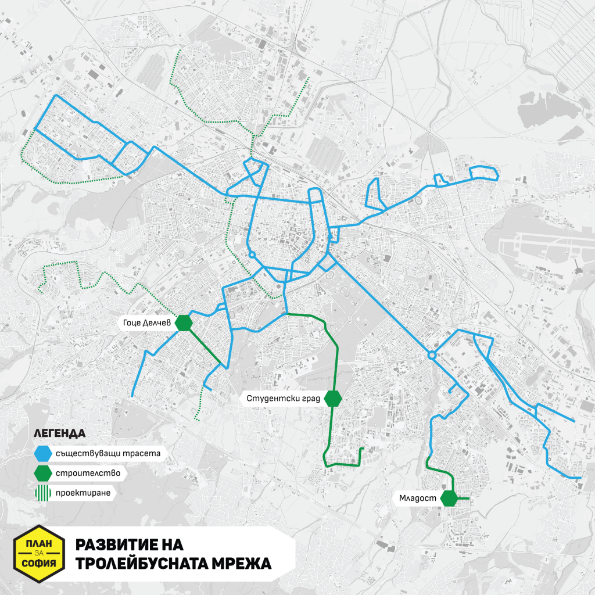
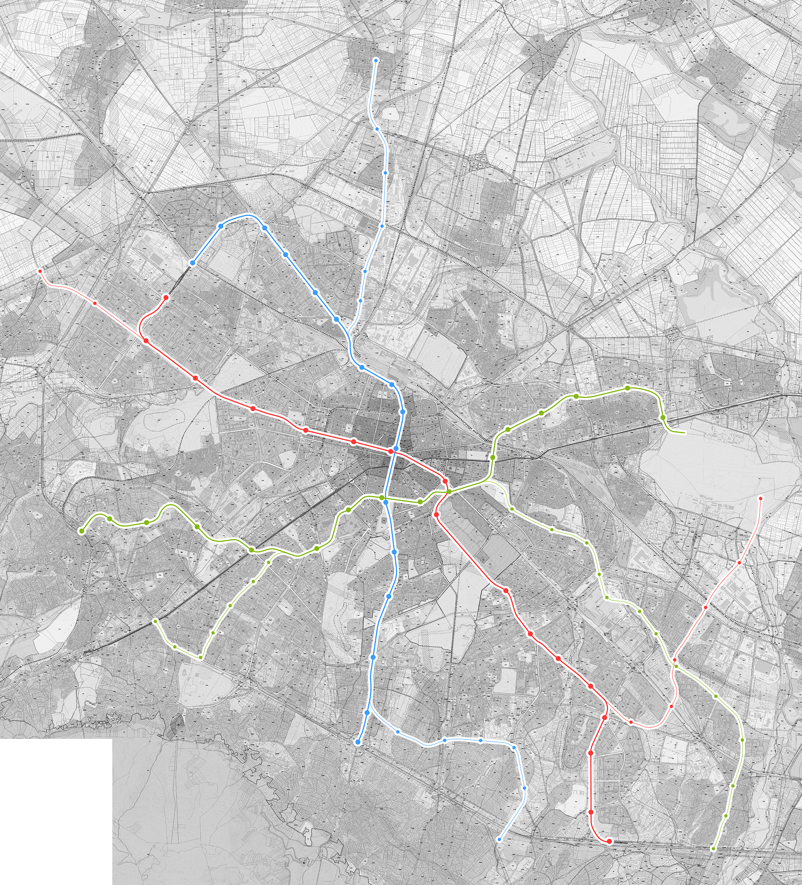
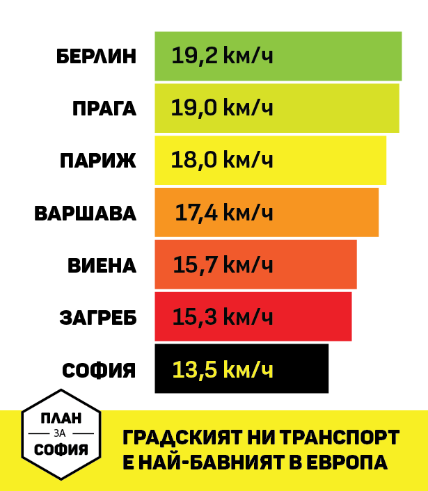
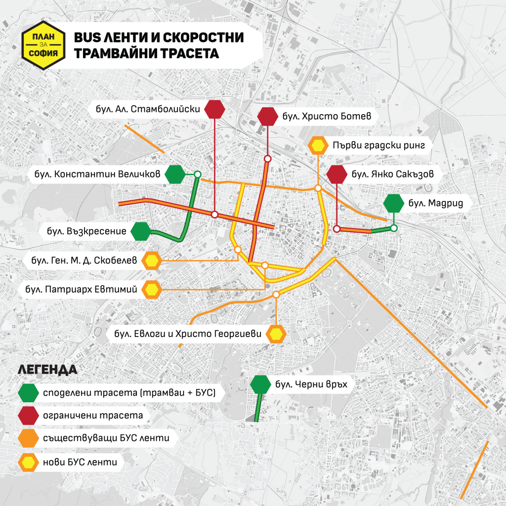
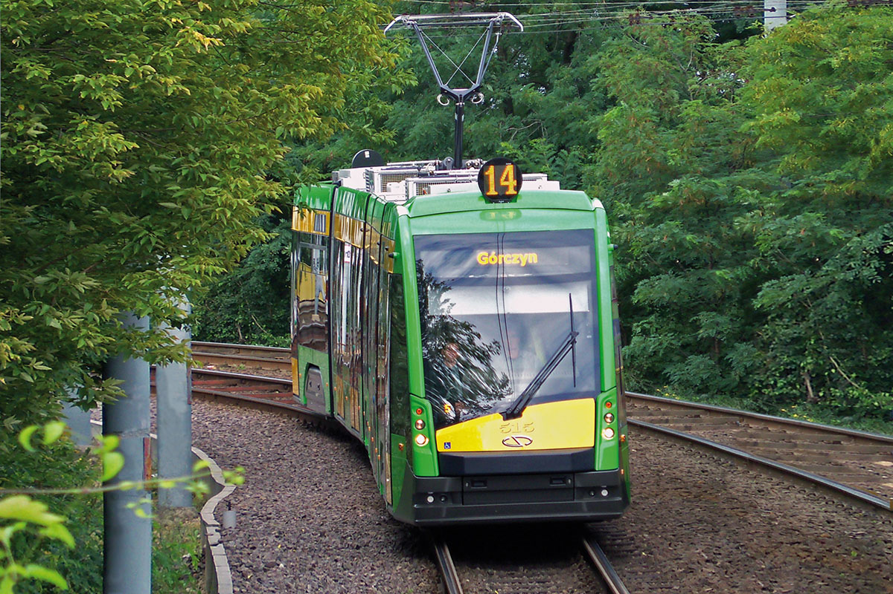
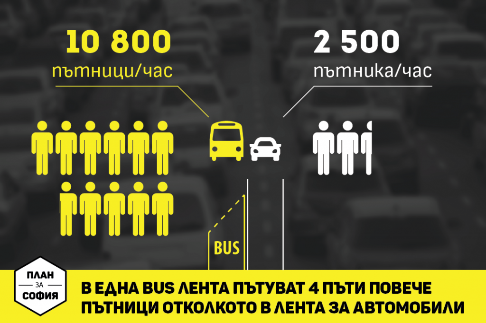
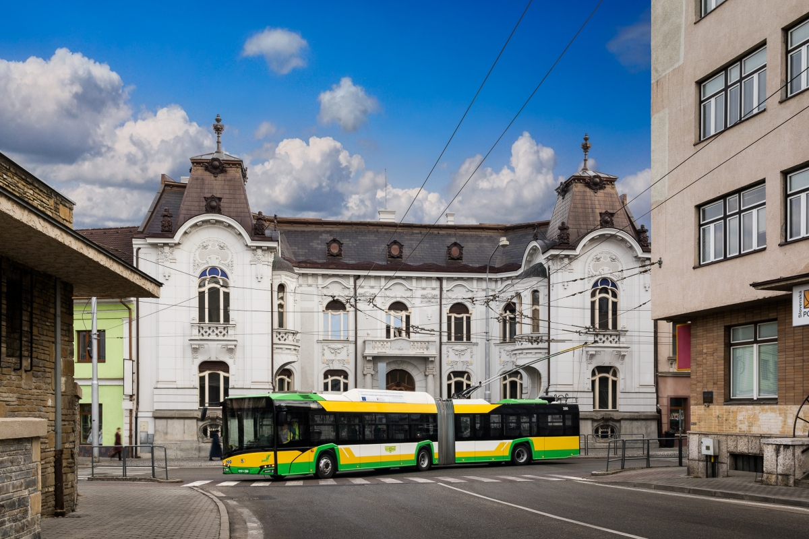
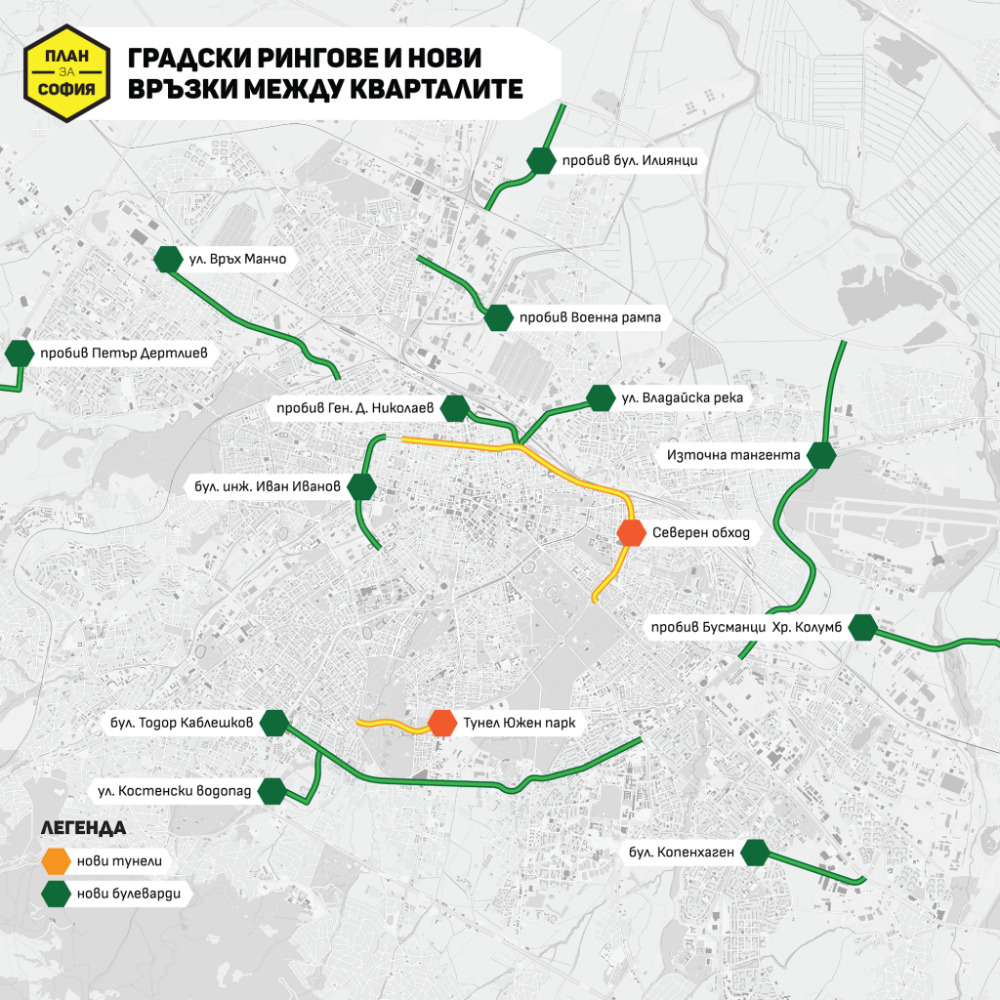
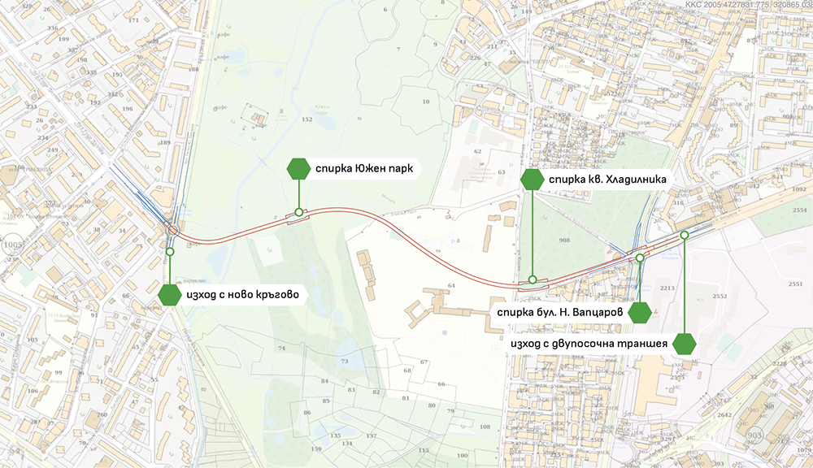
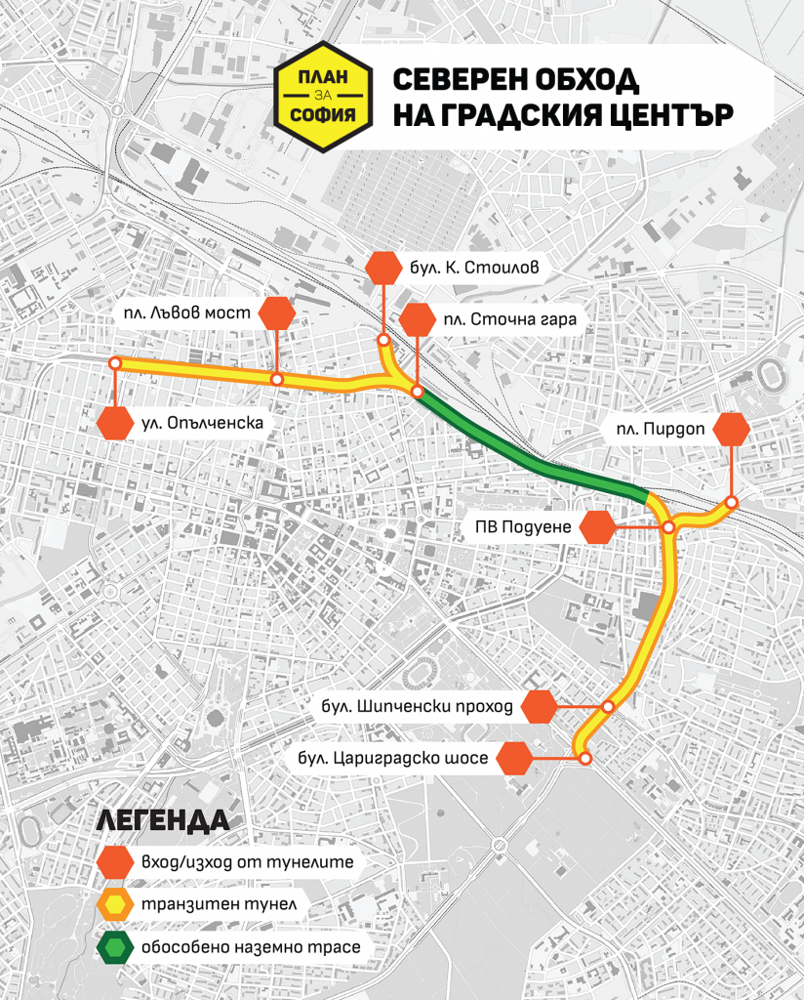

Целта на този раздел от сайта е да Ви запознаем със стратегиите за опазване на природата в София.
Развитие на трамвайните трасета: трамваите са най-екологичният и бърз транспорт след метрото и е по-евтин от него. Също така имат доста голям капацитет и за тях лесно могат да бъдат закачани допълнителни вагони.
Трoлейбуси: също енергоспестяващи и пазещи околната среда, по маневрени са от трамваите и могат да изминават около 5 км без контактна мрежа. Също така са по-качествени и евтини от електробусите.

Метрото осигурява удобна връзка на по-крайните квартали с центъра (ако се проектира правилно и с мисъл за хората, разбира се).

София е един от европейските градове с най-бавен градски транспорт.

За да го "позабързаме" малко, трябва да се създадат нови БУС ленти и споделени трасета.

Колите на градският ни транспорт са стари и амортизирани, затова и непривлекатлни.

Така повече хора предпочитат личните си автомобили, дори и да пътуват по маршрут, по който може да се пътува с градски транспорт, и то без прекачвания.

Това трябва да се промени.

А за тези, пътуващи с автомобили - няма удобни квартални връзки, които бяха ускорили пътуването.

Това е планът за продължение на бул. Тодор Каблешков и връзка на югозападните с югозиточните квартали без да е нужно да се минава през центъра.

По булевардите Ситняково, Данаил Николаев и Сливница винаги стават големи задръствания. Големи струпвания от коли - голямо изпускане на вредни газове, коите влияе на атмосферата. Затова по-голямата част от трафика трябва да се измести под земята.

А покрай Владайската река може да се оформи крайречен парк с велоалеи.
И като заговорихме за велоалеи - имаме нужда от още такива, понеже велосипедният транспорт е най-екологичният от всички.